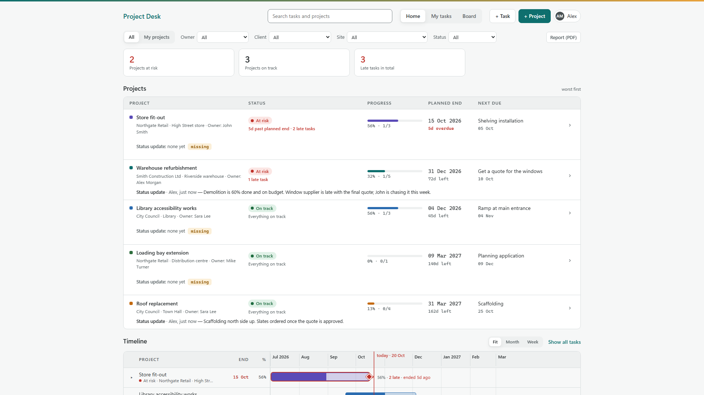
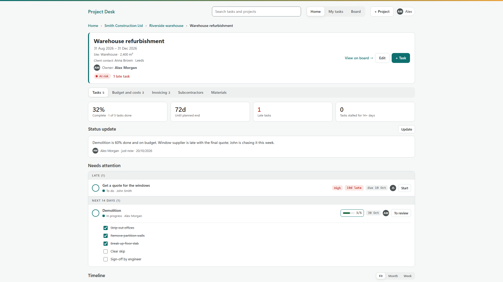
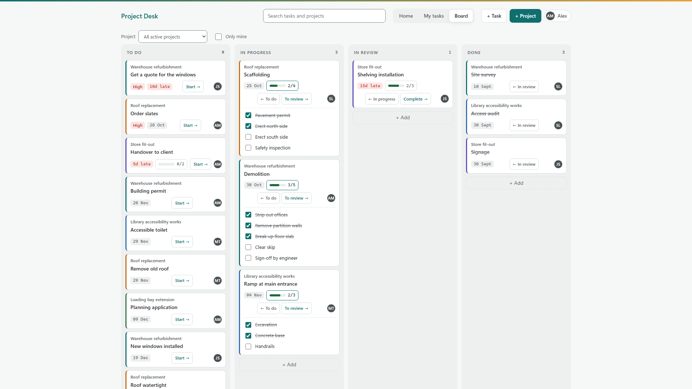
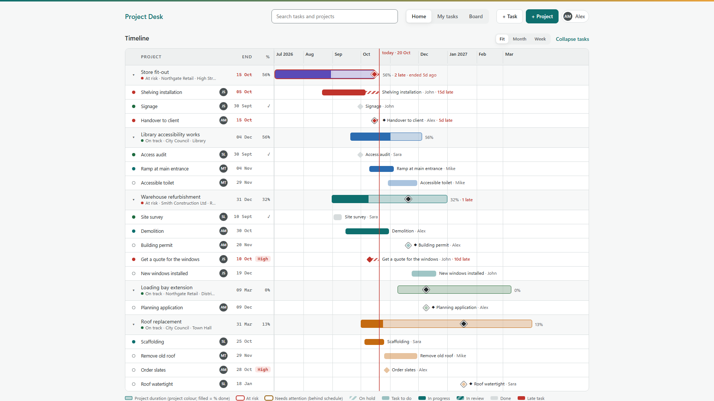
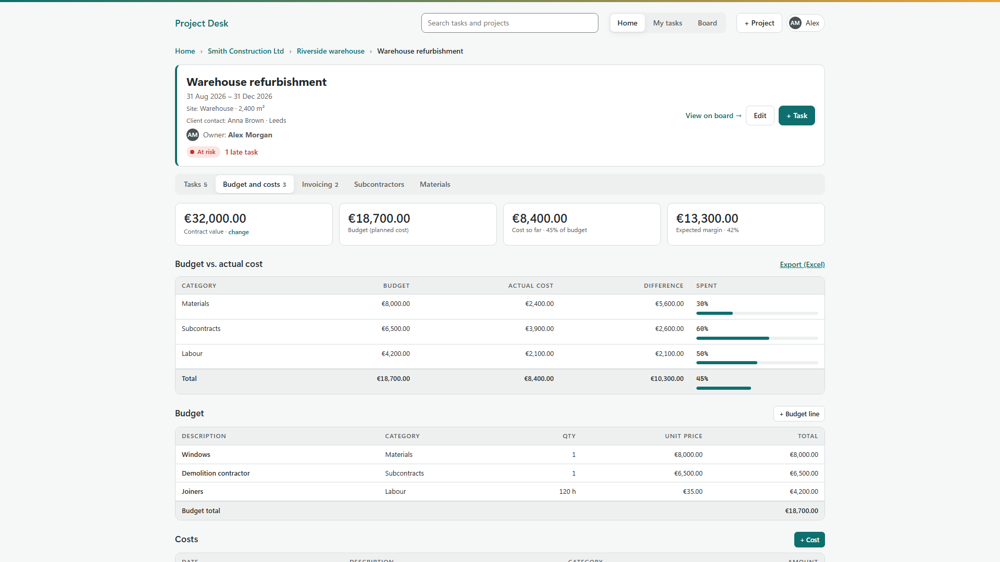
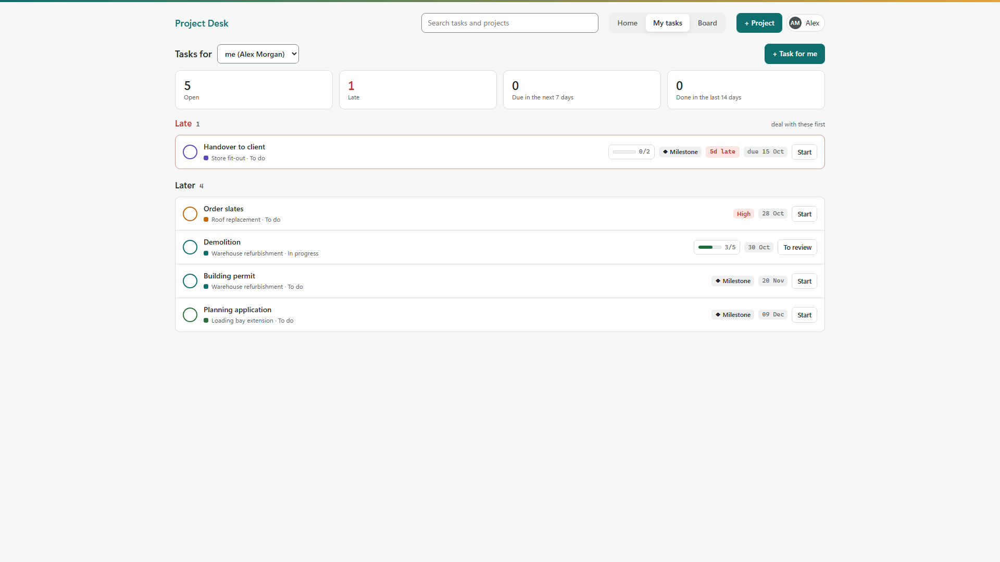
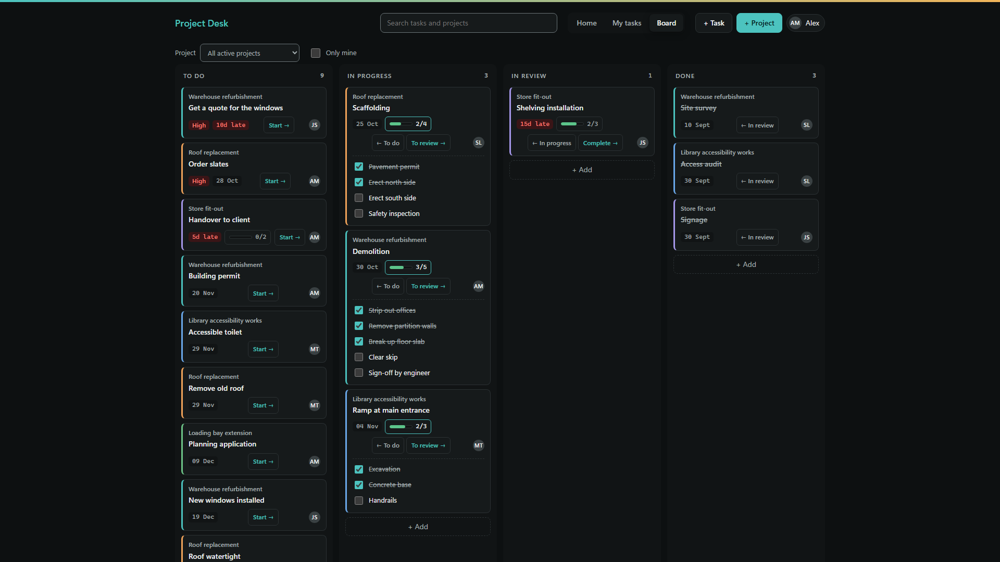

1. Getting started
Open Project Desk from the Start menu. The first time, type your name and click Get started. There is no account or password: your name is used as the owner of the projects you create and in the activity history.
- Click + Project, give it a name, choose (or create) the client and site, and set the start and planned end dates.
- Open the project and click + Task to add work, with an owner, due date and priority.
- Optionally add the people you work with under your name (top right) → People.
2. How your work is organised
Project Desk follows a simple hierarchy:
| Level | Example | What it holds |
|---|---|---|
| Client | Smith Construction Ltd | Contact details and all of the client's sites |
| Site | Riverside warehouse | A building, shop, facility or location (type, size, address) |
| Project | Warehouse refurbishment | Dates, owner, status, budget, costs, invoices, subcontracts, materials |
| Task | Demolition | Owner, dates, priority, checklist, notes, comments and history |
People are the colleagues, foremen or partners you assign as owners. They don't use the app and don't need an account.
3. Home: your portfolio

The Home screen shows every project, worst first.
At the top, indicator cards count projects at risk, needing attention, on track and the total of late tasks — click a card to filter. The filter bar narrows the view by owner, client, site or status, and My projects shows only the projects you own. Below you find the project list (progress, planned end, next due task and the latest status update), the timeline, your clients with their actual cost and invoiced totals, and the recent activity.
4. Project health and progress
Each project gets a status automatically:
| Status | When |
|---|---|
| At risk | The planned end has passed, or there are late tasks. |
| Needs attention | Progress is more than 15 points behind the share of time already elapsed, or tasks have been stalled (in progress without changes) for over 14 days. |
| On track | None of the above. |
| Ready to close | All tasks are done — mark the project as done. |
| No data | No planned end and no tasks yet. |
% complete is realistic: a finished task counts 100%, and an open task counts the share of its checklist already ticked. A task with 3 of 5 checklist items done adds 60% of a task to the project's progress.
5. The project page

Header with dates, site, client contact, owner and health; then tabs for tasks and money.
The Tasks tab shows progress, days until the planned end, late and stalled tasks, the latest status update, Needs attention (alerts and late or upcoming tasks), the project timeline and the full task list grouped by status. Other tabs: Budget and costs, Invoicing, Subcontractors and Materials. Use Edit to change dates, owner, status, client, site or colour.
6. Tasks and checklists
A task has a title, project, status (To do, In progress, In review, Done), start and due dates, priority, owner, notes and an optional milestone flag for key dates such as a permit or handover. Mark a task done with the round check button, or move it a step forward with the button on the right.
Checklists: open a task and add items under Checklist. In every list and on the board the task shows a small progress bar (for example 3/5); click it to open the checklist and tick items on the spot — progress updates instantly.
Each task keeps comments and a full history of changes (who changed what, and when).
7. Kanban board

Drag cards between columns, or use the buttons on each card.
The board shows active projects' tasks in four columns. Filter by project or tick Only mine. Cards show the project, priority, due date or days late, checklist progress and owner. + Add creates a task directly in a column.
8. Gantt timeline

Projects and their tasks on a timeline, with milestones (◆) and today's line.
Each project bar is filled according to its % complete; a red outline means at risk, amber means needs attention. Click the arrow next to a project to show its tasks, or Show all tasks. Late work is drawn in red with hatching up to today. Choose Fit, Month or Week to change the scale.
9. Budget, costs and invoicing

Contract value, budget, actual cost and expected margin for each project.
- Contract value: the price agreed with the client.
- Budget: planned cost lines by category (materials, subcontracts, labour, equipment, other) with quantity and unit price.
- Costs: actual bills and expenses as they come in, with supplier, subcontractor and document number.
- Budget vs. actual: per category, with the percentage spent; a project over budget raises an alert.
- Expected margin: contract value minus the budget (or the actual cost, if higher).
- Invoicing: invoices or progress claims issued to the client; mark them as paid. Invoices unpaid for over 60 days raise an alert.
Use Export (Excel) on the Budget and costs tab to get a spreadsheet of the project's costs. Choose your currency in Settings.
10. Subcontractors and materials
Keep your subcontractors (specialty, tax ID, contact, phone, email) under your name → Subcontractors. In a project, the Subcontractors tab records each subcontract with scope, value, status and dates, and shows how much has already been billed through costs. The Materials tab tracks each material from Requested to Ordered to Delivered, with the date it is needed — late materials and subcontracts past their end date are flagged automatically.
11. My tasks

Everything assigned to one person, sorted by urgency.
Choose yourself or anyone in People to see their open tasks grouped as Late, Next 7 days, Later and No due date, plus what they finished in the last 14 days.
12. Status updates and PDF report
On each project, click Write (or Update) under Status update to record progress, blockers and next steps. Updates older than 14 days are flagged as out of date.
On Home, Report (PDF) prints a professional portfolio report for the projects currently filtered: a summary, health of every project, timeline, upcoming milestones, a sheet per project and the list of late tasks. Choose Microsoft Print to PDF in the print dialog to save it as a PDF.
13. Backups, export and privacy
- Your data is stored only on your PC. Project Desk never connects to the internet.
- A backup is made automatically once a day; the last 14 are kept. By default they go to Documents\Project Desk\Backups — change the folder in Settings (a OneDrive folder or external drive is a good choice).
- Settings → Back up now makes a copy at any time; Restore a backup brings any copy back (your current data is backed up first).
- Export tasks (Excel) and Export everything (JSON) give you your data in open formats.
14. FAQ
Do I need an internet connection or an account?
No. Project Desk works fully offline and has no accounts.
Can several people use it at the same time?
Project Desk is designed for one user per PC. Add colleagues under People to assign them work and share the PDF report or Excel exports with them.
What happens to my data if I uninstall?
Uninstalling removes the app's database, but backups in your backup folder are kept. Restore one after reinstalling to get everything back.
Does it support my currency?
Euro, US dollar, pound sterling, Swiss franc, Brazilian real, Canadian dollar and Australian dollar — choose in Settings.
Dark mode?
Yes — it follows your Windows light or dark setting automatically.

Support
Questions, ideas or a problem? Email deskwisesoftware@gmail.com — we usually reply within two working days. Read our privacy policy.